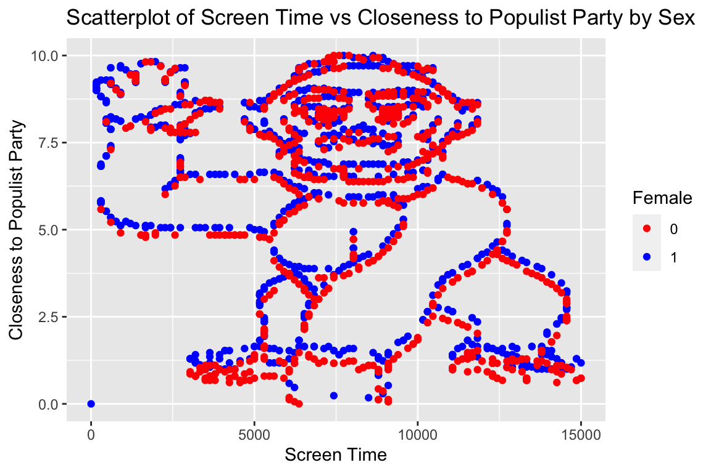
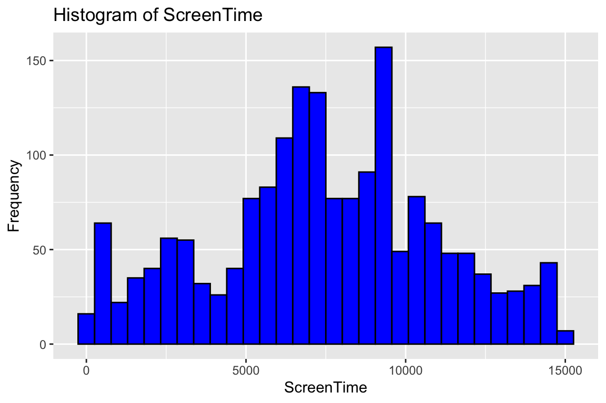
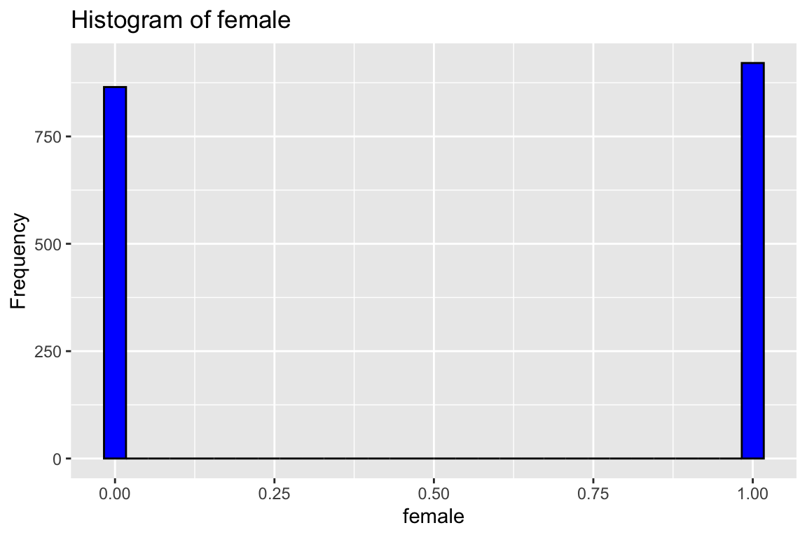

Chapter 1 Week 1: DIYS 1
1.1 Aims:
- To refresh your R skills.
- Performing some basic analyses (i.e., descriptive, exploratory, and hypothesis testing ones).
1.2 First Part: REPETITION R/RStudio
- Download the files
f.txtandm.txt. They contain information on screentime (i.e., number of seconds per day spent on mobile phone), and closeness to a populist party for female and male individuals respectively. Open them and explore the first 3 observations for each file.
Note: remember that this book was developed as an R-project, which is a way to ensure reproducibility of projects. One of the advantages of R-projects is that files are stored in directories (i.e., folders) that are defined relative to the R-project. For example, if the folder Data is stored in the same folder as the project, files stored in Data can be accessed as follows: female <- read.table("Data/f.txt", header = TRUE, sep = "\t").To learn more about R-projects, check this entry.
For the exercise before publishing the solution
# open data
female <- read.table("Data/f.txt", header = TRUE, sep = ";")
# explore data
head(female, 3)## ID ScreenTime ClosenessPopulistParty
## 1 3 15000 1.176471
## 2 4 14861 1.294118
## 3 5 14861 1.294118## ID ScreenTime ClosenessPopulistParty
## 1 1 15000 0.7361963
## 2 2 15000 0.7361963
## 3 6 14861 0.6748466Some key functions in dplyr can be categorized as dealing with columns (e.g., select, mutate), rows (e.g., filter, distinct, arrange), or groups (e.g., group_by, summarise, and count). Let’s use some of them!
- Select only the columns ‘ScreenTime’ and ‘ClosenessPopulistParty’. Do it only for the first three observations of the data on females.
## ScreenTime ClosenessPopulistParty
## 1 15000 1.176471
## 2 14861 1.294118
## 3 14861 1.294118- Select all columns except ‘ID’. Do not use
ScreenTimenorClosenessPopulistParty. Do it only for the first three observations of the data on females. Is the resulting table the same as the previous point? If not, check your answer.
## ScreenTime ClosenessPopulistParty
## 1 15000 1.176471
## 2 14861 1.294118
## 3 14861 1.294118Note: to check the documentation of select, use ?select on the console.
- Use
mutateto create a new column in the DataFramefemalecalledScreenTimeTimesClosenessPopulistPartyformed as the product ofScreenTimeandClosenessPopulistParty. Show the first three observations for the new variable.
female <-female %>%
mutate(ScreenTimeTimesClosenessPopulistParty= ScreenTime * ClosenessPopulistParty)
head(female$ScreenTimeTimesClosenessPopulistParty,3)## [1] 17647.06 19231.88 19231.88- Get rid of the column
ScreenTimeTimesClosenessPopulistParty. Usesubset.
Note: remember to check that the outcome of your code is in accordance with what you expect. To do so, inspect the outcome using head.
## ID ScreenTime ClosenessPopulistParty
## 1 3 15000 1.176471
## 2 4 14861 1.294118
## 3 5 14861 1.294118- Use filter to find the share of female individuals with a
ClosenessPopulistPartyhigher than 20 and lower than 21.
The share of female individuals with a ClosenessPopulistParty higher than 20 and lower than 21 is: 0%.
- Use filter to find the share of female individuals with a
ClosenessPopulistPartyhigher than 20 and lower than 21 while at the same time having less than 14000ScreenTime.
fClosenessPopulistParty20_21_ScreenTime14000 <- female %>%
filter(ClosenessPopulistParty>20, ClosenessPopulistParty<21, ScreenTime<14000)The share of female individuals with a ClosenessPopulistParty higher than 20 and lower than 21 while at the same time having less than 14000 is:“, nrow(fClosenessPopulistParty20_21_ScreenTime14000)*100/nrow(female)
- Use filter to find the share of male individuals with
IDnumber lower than 5 and higher than 860. Notice that you can use either&between conditions or simply a comma. Could any dataset generate a different answer? Why?
The share of male individuals with ID number lower than 5 AND higher than 860 is: 0
- Use filter to find the share of male individuals with
IDnumber lower than 5 or higher than 860. Use|between conditions. Could any dataset generate a different answer? Why?
The share of male individuals with ID number lower than 5 OR higher than 860 is: 46.36.
- Sometimes, data is less than optimal and present repeated observations. Do you have repeated individual observations? Use
distinctto identify the share of male IDs that are unique.
The share of male IDs that are unique is: 100
As you will notice the more you code, there are many possible ways to perform the same task. For example, an alternative to the previous solution is as follows.
# Check for repeated IDs in the female dataset. How many are there?
repeated_ids_female <- female %>%
group_by(ID) %>% # groups by values of ID
filter(n() > 1) # Keeps only groups of values with more than 1 observationThe number of repeated IDs in the female dataset is: 0.
Similarly, you could have used count to count the number of observations sharing all values across all columns. Use it to count how many observations are repeated. Do it for the male dataset.
## [1] 0- Use
arrangeto find the three highest and lowestClosenessPopulistPartyvalues for males. Useslice_head.
# Max
top_3_m <- male %>%
arrange(desc(ClosenessPopulistParty)) %>% #Orders in a descending order the variable CPP
slice_head(n = 3) # returns only the top 3 observations
print(top_3_m)## ID ScreenTime ClosenessPopulistParty
## 1 786 7894 10
## 2 847 7593 10
## 3 863 7431 10# Min
bottom_3_m <- male %>%
arrange(ClosenessPopulistParty) %>%#Orders in a ascending order the variable CPP. `Arrange` proceeds like that by default.
slice_head(n = 3)
print(bottom_3_m)## ID ScreenTime ClosenessPopulistParty
## 1 1170 6366 0.00000000
## 2 614 9097 0.06134969
## 3 615 9097 0.06134969- Use
summariseto describe the maximum, minimum, mean, median, standard deviation, and percentile 10 and 90. Do it for each, thefemaleandmaledatasets.
summary_stats_f <- female %>%
summarise(
max_value = max(ScreenTime),
min_value = min(ScreenTime),
mean_value = mean(ScreenTime),
median_value = median(ScreenTime),
sd_value = sd(ScreenTime),
percentile_10 = quantile(ScreenTime, 0.10),
percentile_90 = quantile(ScreenTime, 0.90)
)
summary_stats_m <- male %>%
summarise(
max_value = max(ScreenTime),
min_value = min(ScreenTime),
mean_value = mean(ScreenTime),
median_value = median(ScreenTime),
sd_value = sd(ScreenTime),
percentile_10 = quantile(ScreenTime, 0.10),
percentile_90 = quantile(ScreenTime, 0.90)
)
summary_f_m <- bind_rows(
"Male" = summary_stats_m,
"Female" = summary_stats_f,
.id = "Sex"
)
summary_f_m## Sex max_value min_value mean_value median_value sd_value percentile_10
## 1 Male 15000 301 8013.908 7894 3255.103 3333
## 2 Female 15000 0 6891.237 7130 3674.206 1366
## percentile_90
## 1 12431
## 2 116671.3 Second Part: Some Simple Analysis
Having refreshed some basics of R, you will now perform some simple analyses.
1.3.1 First, adjust the data
- For each dataset, create a new variable called
female.
Note: it is a good practice to name your variables so their interpretation is easy. For example, instead of using sex as a variable name, using female facilitates understanding that a zero represents male while a one represents female.
- Create one DataFrame with all the IDs present in both datasets. How many cases are there? Use
dplyr’s join methods.
The number of cases where an ID is in both datasets is: 0. Since inner_join keeps the observations whose ids are shared across the merged datasets, the lack of shared individuals across the datasets generates this result.
- Now that you know that there are no repeated individuals across the datasets, consider whether a join method is the appropriate way of unifying both datasets. Try first with
full_joinand then withbind_rows. Which one should you use? Why? Finally, how many individuals does the new DataFrame have?
# # Without assuming that `female` was created for each DataFrame in advance, another alternative could have been.
# female <- read.table("Data/f.txt", header = TRUE, sep = ";")
# male <- read.table("Data/m.txt", header = TRUE, sep = ";")
#
# all <- bind_rows(female, male, .id = 'sex')
#
# # Which assigns a number 1 for the first binded DataFrame, and 2 for the second one. Hence, we can replace the values as follows.
# all$sex <- ifelse(all$sex == 1, 'F', ifelse(all$sex == 2, 'M', all$sex))
# As we have already created `female`
all_fulljoin <- full_join(female, male, by="ID", copy=FALSE)
head(all_fulljoin)## ID ScreenTime.x ClosenessPopulistParty.x female.x ScreenTime.y
## 1 3 15000 1.176471 1 NA
## 2 4 14861 1.294118 1 NA
## 3 5 14861 1.294118 1 NA
## 4 9 14699 1.058824 1 NA
## 5 12 14560 3.176471 1 NA
## 6 14 14560 3.235294 1 NA
## ClosenessPopulistParty.y female.y
## 1 NA NA
## 2 NA NA
## 3 NA NA
## 4 NA NA
## 5 NA NA
## 6 NA NA# Assuming that `sex` was created for each DataFrame
all_bindrows <- bind_rows(female, male, .id = NULL)
head(all_bindrows)## ID ScreenTime ClosenessPopulistParty female
## 1...1 3 15000 1.176471 1
## 2...2 4 14861 1.294118 1
## 3...3 5 14861 1.294118 1
## 4...4 9 14699 1.058824 1
## 5...5 12 14560 3.176471 1
## 6...6 14 14560 3.235294 1The new DataFrame using full_join has 1786, individuals. The new DataFrame using bind_rows also has 1786, individuals. However, as showed with the preliminary inspections made using head(), bind_rows is the adequate tool as the shared variables across sources are taken as belonging to the same variable and are hence stack one on top of the other. On the contrary, full_join assumes that they are different and so distinguishes them by adding the ending “.X” to the variable names of data present in the first dataset and “.Y” to the variable names of data present in the second dataset.
- What’s the share per sex in the unified DataFrame from the previous point? Consider using
group_byandsummarize
# Calculating shares
shares <- all_bindrows %>%
group_by(female) %>%
dplyr::summarize(
count = n(),
share = n() / nrow(all_bindrows)
)
# View the result
print(shares)## # A tibble: 2 × 3
## female count share
## <dbl> <int> <dbl>
## 1 0 865 0.484
## 2 1 921 0.5161.3.2 Second, answer the following questions
Given that your original datasets are random samples, there is uncertainty about how the average of the different variables vary across sexes. Hence, to further qualify your understanding you need to answer the following quetions:
- Is the average number of ScreenTime for males and females statistically different? Use a t-test.
# Conduct a t-test
t_test_result <- t.test(ScreenTime ~ female, data = all_bindrows)
# Print the result
print(t_test_result)##
## Welch Two Sample t-test
##
## data: ScreenTime by female
## t = 6.8441, df = 1778, p-value = 1.055e-11
## alternative hypothesis: true difference in means between group 0 and group 1 is not equal to 0
## 95 percent confidence interval:
## 800.9513 1444.3903
## sample estimates:
## mean in group 0 mean in group 1
## 8013.908 6891.237- Are ClosenessPopulistParty and daily ScreenTime correlated? If so, how?
# Perform Pearson's correlation test
correlation_test <- cor.test(all_bindrows$ClosenessPopulistParty, all_bindrows$ScreenTime, method = "pearson")
# Print the results
print(correlation_test)##
## Pearson's product-moment correlation
##
## data: all_bindrows$ClosenessPopulistParty and all_bindrows$ScreenTime
## t = -12.515, df = 1784, p-value < 2.2e-16
## alternative hypothesis: true correlation is not equal to 0
## 95 percent confidence interval:
## -0.3261789 -0.2408848
## sample estimates:
## cor
## -0.2840939- Does that correlation depend on whether individuals are of one sex or another? If so, how?
# Correlation test for females
correlation_female <- all_bindrows %>%
filter(female == 1) %>%
with(cor.test(ClosenessPopulistParty, ScreenTime, method = "pearson"))
# Correlation test for males
correlation_male <- all_bindrows %>%
filter(female == 0) %>%
with(cor.test(ClosenessPopulistParty, ScreenTime, method = "pearson"))Thus, the correlation for Females is , while it is for Males.
- Finally, graph
ScreenTimevsClosenessPopulistPartyby each sex and the for both together. What does this graph teach you?
Graph for females here.
ggplot(female, aes(x = ScreenTime, y = ClosenessPopulistParty)) +
geom_point() +
labs(x = "Screen Time", y = "Closeness to Populist Party") +
ggtitle("Scatterplot of Screen Time vs Closeness to Populist Party (females)")Graph for males here.
ggplot(male, aes(x = ScreenTime, y = ClosenessPopulistParty)) +
geom_point() +
labs(x = "Screen Time", y = "Closeness to Populist Party") +
ggtitle("Scatterplot of Screen Time vs Closeness to Populist Party (males)")
Graph for females and males together here.
ggplot(all_bindrows, aes(x = ScreenTime, y = ClosenessPopulistParty, color = as.factor(female))) +
geom_point() +
labs(x = "Screen Time", y = "Closeness to Populist Party", color = "Female") +
ggtitle("Scatterplot of Screen Time vs Closeness to Populist Party by Sex") +
scale_color_manual(values = c("1" = "blue", "0" = "red")) # Define color mapping
This exercise was a cautionary tale that aims at highlighting the importance to perform preliminary exploratory analysis on your data. What are the gorillas of your data? For example, have you found people with heights of 10 meters? Have you found systematic but unexpected relationships in the data? What are they due to? Mistakes in data management or measurement? To the phenomenon itself? What relations between variables could guide your analysis?
Preliminary analyses include but are not restricted to:
- Generate scatter plots across many variables
ii. Generate histograms
ggplot(all_bindrows, aes_string(x = 'ScreenTime')) +
geom_histogram(bins = 30, fill = "blue", color = "black") +
labs(title = paste("Histogram of", 'ScreenTime'), x = 'ScreenTime', y = "Frequency")
ggplot(all_bindrows, aes_string(x = "ClosenessPopulistParty")) +
geom_histogram(bins = 30, fill = "blue", color = "black") +
labs(title = paste("Histogram of", 'ClosenessPopulistParty'), x = 'ClosenessPopulistParty', y = "Frequency")ggplot(all_bindrows, aes_string(x = 'female')) +
geom_histogram(bins = 30, fill = "blue", color = "black") +
labs(title = paste("Histogram of", 'female'), x = 'female', y = "Frequency")